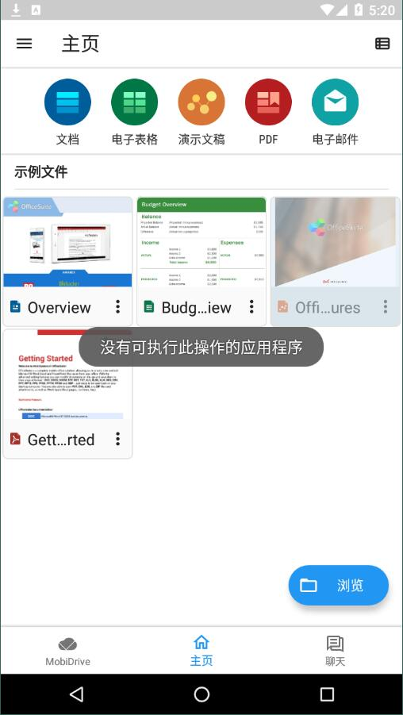
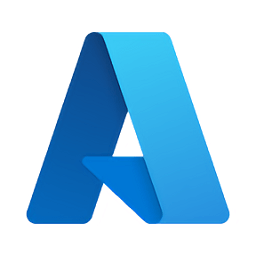

OfficeSuite 深度用后对比：移动端办公到底该不该选它？
用过好几款移动办公套件之后，把 OfficeSuite 放在同类里做一次理性评测：它的差异化优势、为这些优势付出的代价，以及什么人值得为它买单。
同类格局里，它排在什么位置
移动办公这个赛道的玩家不少：有大厂自带的（系统预装的基础编辑器、浏览器在线版）、有老牌 PC 软件的移动端移植、还有 MobiSystems 这种做了十几年移动办公的老牌厂商。OfficeSuite 属于最容易被低估的那一类——它的官网不做夸张营销，也不是系统自带，也不是 PC 霸主的亲儿子，存在感经常被淹没在各种预装应用里。
但如果你真的在平板或手机上长时间做过文档、表格、PPT，就会发现：能把「能用」和「好用」区分开的产品其实不多。系统自带的那些免费编辑器，做个批注改个字还行，一旦要合并单元格、冻结窗格、插入分页符，要么功能阉割要么交互反直觉。在线版的优势在协作，劣势在离线和性能。而 OfficeSuite 刚好卡在中间——它不追求成为所有人的唯一选择，却在「移动端独立办公」这个特定场景下，做得比绝大多数竞品都认真。

它的差异化到底在哪
完整度不是靠堆功能，是靠对移动端场景的真理解
很多办公软件的移动端版本，本质上是把 PC 界面粗暴缩小，然后期待用户在手机屏幕上用手指模拟鼠标操作。OfficeSuite 不一样，它的每个模块都做了触屏优先的交互设计：电子表格里的绿色快速数字键盘，就是专为手机竖屏单手输入数据准备的——选中单元格后自动弹出大号数字键，不用在全键盘和数字键盘之间来回切换。工作表的重命名和删除，用长按标签就能呼出菜单，符合触屏直觉。
这种「为触屏重新设计」的思路贯穿在细节里。比如查找替换，弹出的查找栏和选项面板不会像桌面版那样占据半个屏幕；冻结行列的操作，也是在单元格选中后通过「视图」菜单一步到位，不用先翻复杂的工具栏。
平板 + 外接键盘的场景，它是目前最接近桌面体验的
我有一段时间把平板当迷你笔记本用，外接蓝牙键盘写文档、做表格。试过好几款之后发现，能在外接键盘时完整支持桌面级快捷键的，OfficeSuite 是少数之一——文档模块的 Ctrl+B 加粗、Ctrl+Enter 分页、表格模块的 F4 循环引用切换、Alt+= 自动求和、放映模块的 F5 全屏放映，这些 PC 用户的肌肉记忆在 OfficeSuite 上几乎可以无缝迁移。
更关键的是，当你接上物理键盘时，系统虚拟键盘会自动隐藏，屏幕空间全部留给编辑区域。平板横屏 + 键盘 + OfficeSuite 的组合，实际体验已经能覆盖 80% 的日常办公需求——写方案、做报表、改 PPT，效率不比坐在桌前差多少。
MobiDrive 的原生集成，是懒人的福音
云存储这个事，OfficeSuite 做了一个聪明的选择：自带 5GB 免费 MobiDrive 云盘，和 Premium 50GB 扩容，同时还能手动连接 Google Drive、Dropbox、OneDrive、Box 四家主流云盘。
聪明的地方在于 MobiDrive 的集成深度——你不用单独打开云盘 App，在 OfficeSuite 的任何模块里点「文件 → 另存为」就能直接存到云端，跨设备打开也是自动同步。冲突解决做得也合理：同一文件两台设备几乎同时修改时，它会保留两个版本让你手动选，而不是粗暴覆盖或者锁死。Premium 用户还能开离线保存和端到端加密，对有敏感文档需求的人来说是个加分项。

想试试的话，各平台安装包从官方下载就能拿到，注册账户关联 MobiDrive 即刻同步。
为这些优势它付出了什么
没有产品是完美的，OfficeSuite 的取舍也很明确。
首先是平台限制。它的 Android 版本功能最全，外接键盘快捷键支持最完整；Windows 版基本等价，但 iOS 版因为系统限制，部分快捷键和高级功能会打折扣。如果你主要用 iPhone 或 iPad Pro 搭配 Magic Keyboard，体验上会比 Android 平板差一截。
其次是Premium 门槛。工作表颜色标记、PDF 签名、端到端加密、文件版本历史、大文件支持——这些进阶功能都锁在 Premium 订阅里。免费版够用但会频繁碰到功能墙，订阅费用算下来不比某些一次性买断的方案便宜。
最后是品牌认知度。相比大厂自带的编辑器和在线协作工具，OfficeSuite 的用户基数小得多，遇到问题时能搜到的中文教程和社区讨论也少。好在它的OfficeSuite文档做得相当扎实，覆盖了从入门到进阶的所有模块，包括快捷键速查、查找替换的高级选项、MobiDrive 的同步机制等细节。
选购结论：什么样的人选它
如果你是以下几类人，OfficeSuite 值得认真考虑：
- 平板深度用户：不管是娱乐平板还是办公平板，只要你真的在上面写文档、做表格，OfficeSuite 的触屏交互和外接键盘体验会给你明显提升。
- 经常在移动中办公：地铁、飞机、咖啡馆，需要离线编辑文档而不是依赖浏览器——完整的离线功能和自动同步是刚需。
- 已经有 Google Drive / OneDrive 但想要一个更专注的编辑器：OfficeSuite 连得上你的现有云盘，又能在移动端提供比原生 App 更好的编辑体验。
如果你主要在 PC 上办公、偶尔用手机看个文件批注一下，系统自带的编辑器就够用了，没必要花订阅费。如果你最看重多人协作和实时同步，在线版的工具链会更适合你。
总结一句：OfficeSuite 不是最好的移动办公软件，但它是最认真做移动端独立办公的那一个。它的资料在GitHub、Gitee、GitCode 三个仓库都能拿到，国内访问后两者会更顺畅。